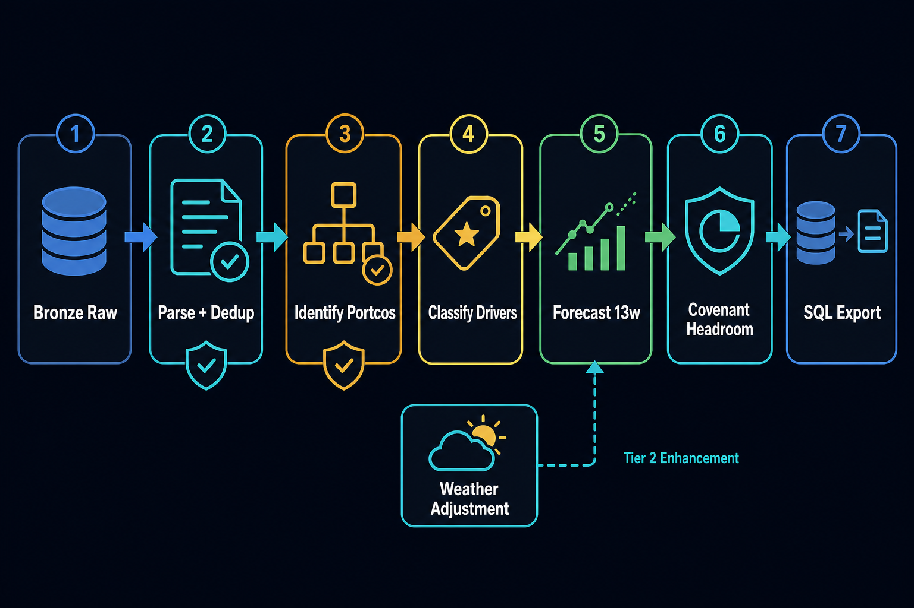

Architecture · Data processing
How the Altis data became dashboard-ready
The build uses a layered Databricks pipeline: raw accounting and weather files are parsed into canonical Silver datasets, enriched into Gold business tables, exported to Azure SQL, then consumed by the Lovable dashboard.

Source data inventory
| Source | System / shape | Use | Important caveat |
|---|---|---|---|
| Peter Ummels exports | Yuki, admin 82604, header after 12 meta rows | Booking-level revenue ledger | Overlapping exports; dedup needed |
| Heeze exports | Exact GB 8000/8001/8002 | Booking-level revenue ledger with VAT and free text | No AP-side costs |
| Dataset 2 | Yearly sheets, sales journal 006 | Winschoten booking-level revenue | Missing GL account detail |
| Dataset 1 + JSON aggregate | Monthly KPI roll-up | Revenue matching and Andijk history | Andijk aggregate-only, no drill-down |
| KNMI weather files | Daily observations for Brunssum, Eindhoven, Winschoten | Weather-to-work-day scoring | Historical normals, not live 13-week forecast |
Notebook pipeline
01 · Connect storage
Lists raw/gold containers, loads a legacy database workbook, snapshots schema metadata.
02 · Explore received data
Inventories every blob, captures sheet shapes and first rows, guesses header rows.
03 · Silver cleanse
Parses Yuki, Exact, and Dataset 2; writes per-source Parquet and unified silver/bookings.parquet.
04 · Validate + identify
Matches yearly/monthly totals to JSON P&L to resolve portcos: Peter Ummels, Heeze, Winschoten, Andijk.
05 · Gold classify
Adds real portco names and driver labels; all observed rows map to milestone_in.
06 · Forecast 13 weeks
Builds history, seasonality, assumptions, scenario forecasts, confidence labels, and outflows.
07 · Covenant
Adds placeholder cash floor, cumulative cash, headroom, and ok/watch/breach statuses.
08 · SQL export
Pushes Gold Parquet tables into Azure SQL as flat dashboard tables.
10–12 · Weather + charts
Normalizes KNMI files, creates work-day ratios, adjusts forecast, and sketches Tier 2 visualizations.
Canonical Silver schema
Silver keeps the audit trail. Every booking carries its source_file, source_schema, booking_number, dates, GL fields, amount, VAT, and raw text. This makes dashboard drill-down possible.
portco, administration, source_file
gl_account, journal, period, booking_number
debit, credit, amount_net, vat_amount
boekingstekst, ingested_at, source_schema
Honest boundaries
- Observed data is sales-side only: GL 8000–8005 revenue accounts.
- No payment-date column: receipts use booking/invoice date + DSO.
- No AP-side data: materials, subcontractor, and labour outflows are derived from margin assumptions.
- No real covenant document yet: headroom floor is placeholder.
- Weather model uses historical KNMI normals, not live weather forecast API.